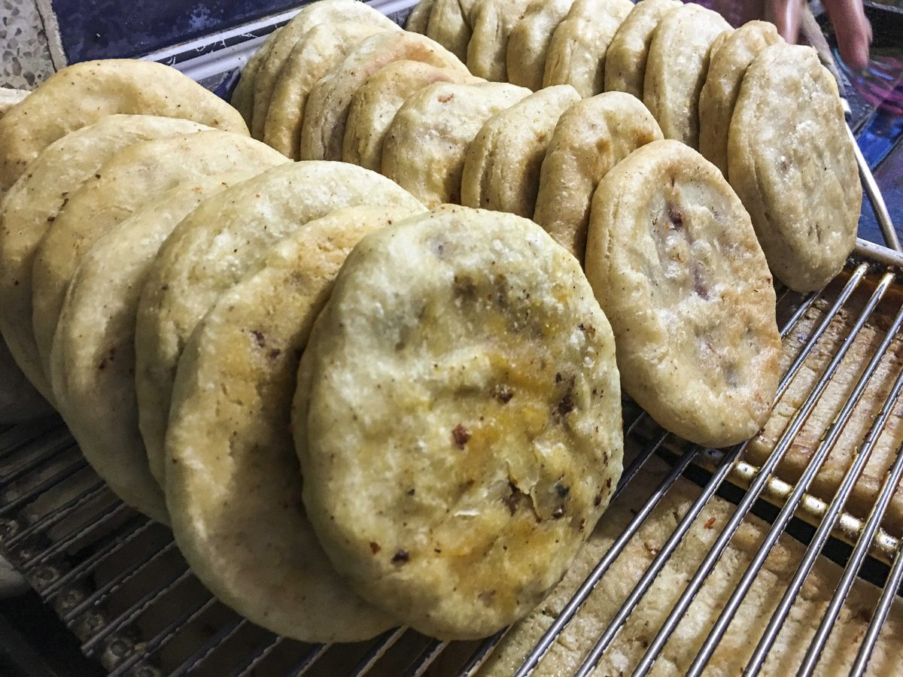

Gorditas

Description:
Gorditas are some kind of tortilla, they can be filled with many
things and can be sweet or salty.
Ingredients:
- 1 cup masa harina
- 1 cup all purpose flour
- 1 teaspoon salt
- 1 tablespoon shortening
- 1 cup hot water
- 1 cup oil for frying
Preparation:
- In a large bowl, stir together the masa harina, salt and hot
water. Gradually mix in the shortening and flour. If the dough
seems dry, add a little more hot water. Form the dough into
balls that will fit into the palm of your hand.
- Line a work surface with waxed paper or plastic. Sprinkle with water.
Flatten balls on the wet surface until about 1/4 inch thick.
- Heat a griddle or comal over medium heat. Cook the gorditas on each
side until they are cooked through.
- Heat oil in a large heavy skillet over medium to medium-high heat
until hot. Fry each gordita until puffed, pressing it down into the
oil occasionally with a spatula. Drain briefly on paper towels, cut
the tips off and stuff full of your favorite foods.